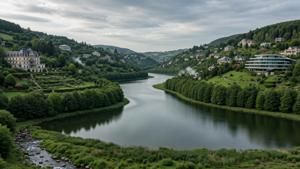
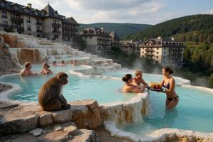
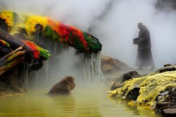
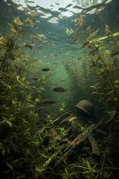
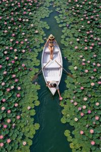
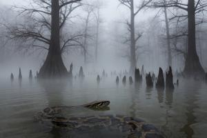
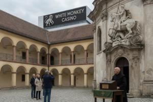
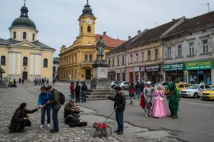
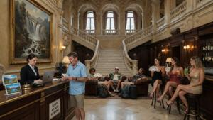

Гниловоды
{kind=link}

Гниловоды (згур. и дегл. Gnilovody, глаг. ⰃⰐⰊⰎⰑⰂⰑⰄⰬ) — природный регион и муниципалитет в Бывшей Верхней Паннонии. Занимает долину, полную горячих минеральных источников. Не имеет сплошной городской застройки, а состоит из множества санаторно-курортных комплексов с примыкающими посёлками. Площадь муниципальной территории — 11,5 кв. км, постоянное население — около 10 000 чел., количество единовременно отдыхающих курортников колеблется от 20 до 50 тыс. чел. Своим названием, означающим буквально «гнилые воды», регион обязан запаху сероводорода, источаемому сернистыми источниками. В административном отношении Гниловоды служат центром Гниловодского уезда, самого западного уезда Згурской Республики, граничащего с Австрией и Венгрией.
Природа
Геология и микроклимат
{kind=link}

Гниловоды занимают бессточную долину в холмистой местности, имеющую около 10 км длины и 2 км ширины в самом широком месте. Долина представляет собой опущенный участок земной коры, образовавшийся на тектоническом разломе. Миллионы лет назад здесь было мелкое тёплое Паннонское море, которое оставило после себя мощные толщи известняка. Глубже залегает слой гипса с высоким содержанием серы. Долина образовалась в результате вертикального сдвига вдоль разлома: её южный склон поднят относительно северного, и гипсовый слой с южной стороны выходит на поверхность.
Поверхностные грунтовые воды, просачиваясь сквозь известняк, проникают на глубину 1–2 км, нагреваются геотермальным теплом, растворяют карбонат кальция и поднимаются на поверхность по трещинам. Часть воды проникает глубже в гипсовый слой, где в условиях высоких температур и давления, а также благодаря сульфатредуцирующим бактериям, происходит реакция с выделением сероводорода. Серосодержащая вода также поднимается к поверхности и выходит наружу с южной стороны, где гипсовый слой обнажён благодаря тектоническому сдвигу.
В результате с северного (известнякового) склона долины бьют многочисленные карбонатно-кальциево-магниевые источники, а с южного — сернистые, те и другие с температурой воды в диапазоне от 40°C до 75°C. Их воды сливаются в центре, образуя бессточное озеро Гниловоды. Вода от источников течёт к озеру по пологим склонам. Из воды карбонатных источников при контакте с воздухом и охлаждении выпадает в осадок карбонат кальция, образуя каскады живописных травертиновых террас, как в Памуккале или на Плитвицких озёрах. Сероводород сернистых источников частично улетучивается, а частично перерабатывается тионовыми бактериями. В результате вода озера оказывается более пресной, менее минерализованной, чем в термальных источниках. Температура воды в озере круглый год держится в диапазоне от +22°C до +28°C.
Дно озера покрывает многометровый слой лечебного термального ила (торфяного сапропеля). Каждую осень растения сбрасывают огромное количество органики (листья, хвоя, стебли). Из-за отсутствия кислорода на глубине и наличия сероводорода эта органика не перегнивает полностью, а медленно «коптится», превращаясь в мягкую, маслянистую чёрную или тёмно-серую грязь, пропитанную осаждающимся кальцием, кристаллами гипса и органическими кислотами.
Благодаря постоянно подогретой воде озеро работает как гигантская тепловая батарея. Зимой, когда температура воздуха падает ниже нуля, над озером Гниловоды образуется плотный, густой туман, окутывающий всю долину. Этот слой тумана действует как одеяло, задерживая инфракрасное излучение. Летом в долине господствует экстремально высокая влажность.
Живая природа
{kind=link}

Термальные источники сформировали в долине своеобразную экосистему со множеством эндемичных видов. Берега карбонатных ручьёв, сложенные светлым пористым травертином, покрыты густым ярким мхом. Сине-зелёные водоросли, способные выживать в горячей воде, придают ей бирюзовый оттенок. В воде сернистых источников процветают экстремофильные бактерии: дно и прибрежные камни покрыты склизкими плёнками бактериальных матов, чьи цвета варьируют от ядовито-жёлтого и ярко-оранжевого до кроваво-красного и изумрудно-зелёного. На нависающих над водой камнях или корягах образуются белые, тягучие нити слизи — сноттиты, колонии бактерий, перерабатывающих сероводород в серную кислоту. Из-за окисления сероводорода почва вокруг таких ручьёв экстремально кислотная, непригодная для обычных растений. На голой земле и камнях у кромки воды кристаллизуется самородная сера, образуя хрупкие лимонно-жёлтые налёты, слегка дымящиеся в морозные дни.
{kind=link}

Дно озера на мелководье покрыто лугами подводных растений, таких как валлиснения и перистолистник. Вода насыщена углекислым газом из источников, поэтому растения растут с невероятной скоростью, образуя густые подводные джунгли. На средней глубине в условиях недостатка света растения уступают место бактериальным и водорослевым матам. Дно покрывают бархатистые ковры из нитчатых зелёных и сине-зелёных водорослей, а также нитчатых серных бактерий. Они создают плотную «подушку», которая скрепляет ил.
До вмешательства человека берега озера были покрыты густыми зарослями тростника, в воде цвели белые кувшинки, чуть подальше на берегах росли реликтовые папоротники (например, телиптерис болотный). Процветали ужи, лягушки и тритоны, для которых здесь круглый год царила весна. В озере обитал эндемичный вид карповых рыб, приспособившийся к тёплой, слегка сернистой воде. Склоны долины между термальными ручьями покрывал буковый лес.
В 1870-е годы владелец большей части земель в долине, богач и путешественник Адальфрид Аттила Брегови, решил устроить здесь «уголок тропиков», оранжерею под открытым небом, и интродуцировал множество тропических и субтропических видов, собранных им в экспедициях. Часть привозных видов погибла в первые же зимы, не выдержав холодного воздуха (например, птицы и орхидеи), но водные и прибрежные виды адаптировались, создав причудливый гибридный биоценоз.
{kind=link}

Болотный кипарис (Taxodium distichum) из Северной Америки идеально прижился по берегам. Озеро окружено лесом из огромных хвойных деревьев. Из воды торчат их дыхательные корни — пневматофоры. Зимой кипарисы сбрасывают хвою, но их мощные стволы в тумане выглядят монументально. Мелководья захватил индийский лотос (Nelumbo nucifera), вытеснив местные кувшинки; летом он образует обширные заросли огромных листьев и розовых цветов. Дальше от воды, на сухой и подогреваемой снизу почве образовались плотные бамбуковые рощи.
Пецилиевые рыбы (гуппи и гамбузии), выпущенные для борьбы с комарами и для украшения, расплодились в невероятных количествах. Они поедают личинок насекомых и являются основой пищевой цепи. Цихлиды (например, тиляпия) — крупные африканские рыбы — выжили благодаря стабильно тёплой воде и стали доминирующим видом в центре озера, полностью уничтожив популяцию местных эндемичных рыб. Также выжили в тёплой воде красноухие черепахи, но зимой они вынуждены греться в термальных источниках, так как воздух для них слишком холодный.
{kind=link}

Местные хищники — цапли, выдры, зимородки — процветают, поскольку озеро полно рыбы и не замерзает зимой, обеспечивая их кормом круглый год. Но с ними конкурируют несколько выживших видов привозных хищников, таких как тигровый питон (Python bivittatus), выживающий зимой за счёт того, что прячется в глубокие норы или уходит на дно непромерзающих водоёмов, и серый варан (Varanus griseus), умеющий впадать в зимнюю спячку.
Ярчайшими представителями местной экосистемы стали японские макаки (Macaca fuscata). Летом они резвятся в сохранившихся буковых рощах, а зимой практически не покидают тёплых заводей и травертиновых ванн, часами сидя по шею в воде среди густого пара. Они научились выкапывать корни лотоса, ловить лягушек и нырять за цихлидами, но предпочитают лёгкую добычу среди людей, попрошайничая, воруя, роясь в отходах или совершая набеги на фруктовые сады. У туристов при первой встрече они вызывают восторг и умиление, но эти чувства быстро проходят.
История
{kind=link}

Гниловодская долина была заселена с глубокой древности, что доказывается археологическими находками в озёрном иле; в его бескислородной среде неплохо сохраняются не только кости, но и образцы кожи и дерева. Древнейшие образцы относятся к раннему неолиту. В средние века сложилась легенда, будто бы именно на этом месте святой Георгий поразил дракона; сернистые источники идут от гниющей плоти дракона, погребённого глубоко под озером, а вода карбонатных источников — это слёзы спасённой от дракона царевны. Уже в XI веке на южном берегу озера был построен монастырь святого Георгия; впоследствии князья-епископы Брегово пожаловали ему права на всю территорию долины.
Целебные свойства термальных вод были также известны давно. В средние века они толковались как чудотворные и приписывались св. Георгию; долина была местом паломничества со всей территории Венгерского королевства и окрестных стран. Турки, захватившие Гниловоды после битвы при Мохаче, тоже почитали св. Георгия (Джирджиса в исламе) и ценили лечебные свойства минеральных источников. Монастырь сохранил свои права и продолжал привлекать паломников, в том числе и мусульман. Но долина располагалась на самом австрийско-османском фронтире и неоднократно разорялась войсками обеих сторон, из-за чего пришла в упадок, и к концу XVII века практически обезлюдела.
{kind=link}

После отвоевания Верхней Паннонии австрийцами Гниловоды вошли в состав графства Верхняя Паннония. Монастырь св. Георгия был восстановлен, но часть земель корона раздала светским владельцам, в том числе знатному роду Брегови. На южном берегу, над сернистыми источниками, была построена крепость Жлуты Воды («Жёлтые воды»). В конце XVIII и первой половине XIX века Брегови, никогда не гнушавшиеся коммерцией, построили в своих владениях современные курортные заведения. Монахи св. Георгия со своими средневековыми лечебницами не могли выдержать конкуренцию с ними и постепенно продали Брегови большинство своих владений, сохранив только центральный монастырь в Свютоджорджево.
Ко второй половине XIX века Брегови владели почти всей долиной, что позволило Адальфриду Аттиле устроить свой тропический парк. Гниловоды превратились в обширный и прибыльный курорт, полный частных вилл, санаториев и всевозможных увеселительных заведений. В таком виде они просуществовали до 1945 года, когда были национализированы коммунистами. Крупные санатории превратились во всенародные здравницы, а виллы — в дачи и дома отдыха для номенклатуры.
После падения коммунистического режима Гниловоды на короткое время стали ареной бурной приватизации с вооружёнными разборками, а в годы гражданской войны — зоной боевых действий. К 1994 году здесь установили прочный контроль згурские формирования, но только после перемирия 1995 года курортная жизнь начала понемногу восстанавливаться. После ещё нескольких раундов приватизации и переделов собственности большинство санаториев перешли в руки различных представителей семьи Влошек.
Современное состояние
{kind=link}

Через тридцать лет после окончания гражданской войны Гниловоды представляют собой вполне развитый, хорошо функционирующий курорт. Стремясь привлечь иностранных туристов, згурские власти добились для него статуса «района с упрощённым режимом доступа»; это единственная часть Бывшей Верхней Паннонии, куда любой иностранец может попасть без визы и специального разрешения — достаточно лишь оплаченного номера в любом санатории, спа-центре или отеле долины. Прямые рейсовые автобусы ежедневно ходят из Айзенкирхена и Кечкехедьсентмиклоша до автовокзала в Жлутых Водах, главном транспортном узле и административном центре муниципалитета.
Туристам предлагаются все виды спа-услуг, питьевые минеральные воды, купание в горячих источниках под открытым небом в любое время года, лодочные прогулки по озеру и экскурсии по уникальному «тропическому» лесу. Купание в самом озере не рекомендуется из-за глубокого ила на дне и опасности нападения тигровых питонов. Гниловодам приходится конкурировать с аналогичными и прекрасно развитыми курортами соседней Венгрии, поэтому владельцы заманивают туристов всякого рода сомнительными приёмами. Все крупные отели и санатории имеют казино и зоны «только для взрослых».
Поскольку Влошеки заинтересованы в том, чтобы туристы тратили свои деньги только в Гниловодах, а не где-либо ещё, свободного выезда из долины нет. Она огорожена проволочным забором, а выезды караулят згурские пограничники, не пропускающие лиц с иностранными паспортами; единственный способ покинуть долину для иностранца — рейсовый автобус до Айзенкирхена или Кечкехедьсентмиклоша. Такой режим нередко вызывает жалобы туристов, «ощущающих себя немного узниками концлагеря».
{kind=link}
На соответствующих сайтах можно встретить и другие жалобы. Восторгаясь местной природой, туристы в то же время отмечают, что качество сервиса далеко не соответствует ценам, и предлагаемые услуги зачастую просто мошеннические, чтобы не сказать грабительские. Гостям досаждают макаки, свободно гуляющие по всей территории и совершенно не боящиеся людей; пугают вараны и питоны, нередко заползающие на территории отелей; раздражают назойливые торговцы и проститутки; приводят в ужас местные бандиты, для которых Гниловоды служат любимым местом отдыха, а отдых неизменно предполагает бурные вечеринки с оглушительной музыкой, пальбой в воздух и хулиганскими выходками самого отвратительного сорта. Владельцы отелей и муниципальная администрация, судя по всему, тратят львиную долю времени и сил не на решение самих проблем, а на то, чтобы вычищать из интернета подобные отзывы.
Категории: Населённые пункты, Природа